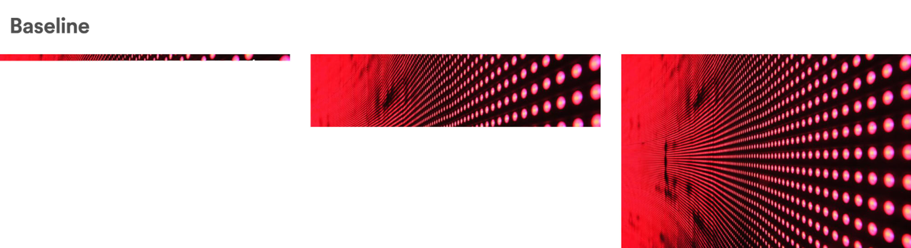
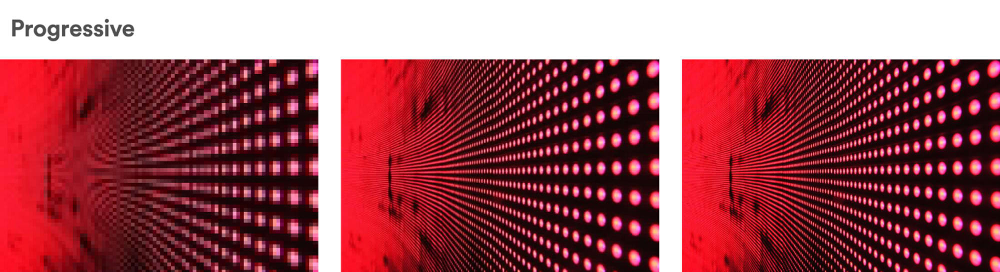

class: center, middle # How to learn anything better [nilesh trivedi] --- # Spiral learning  v/s  --- # Spiral learning <video src="learn-files/progressive.webm" controls width=750 height=500 /> --- # The role of memory Rote-learning --- # Spaced repetition --- # Chunking --- # Metacognition --- # Growth Mindset --- # Learning a language --- # Bloom's Taxonomy Revised <img src="https://my-ecoach.com/online/resources/5/bloom_comparison.jpg" /> --- # Bloom's Taxonomy Revised <img src="https://meestervormgever.files.wordpress.com/2015/02/bloomstaxonomyrevised.png" style="width:100%;" /> --- # Feynman Technique --- # Finding best resources --- # Best books about learning --- # Learn Awesome project ---